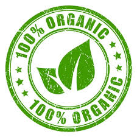
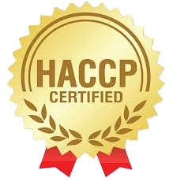
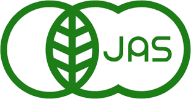
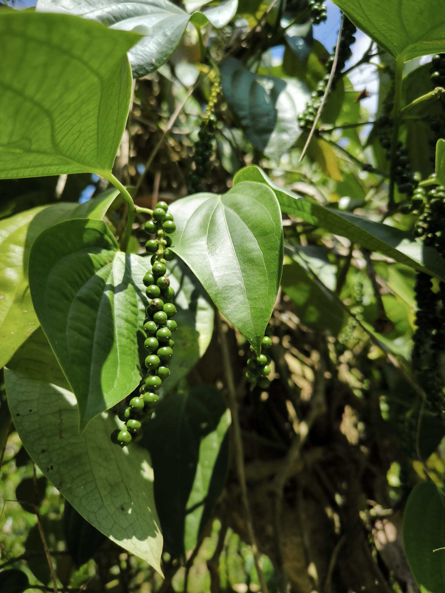

For Business Clients
Bulk orders from 100 kg
Orders from 100 kg up to container quantities
EU export / EU-ready documentation
Experience exporting to Germany and other EU countries
Flexible Packaging
Whole quills, cut, powder - based on your needs
Private label
Available for brands and distributors
Certificates:





Why Choose Ceylon Cinnamon (Cinnamomum verum)
In the global market, not all cinnamon is created equal. While common Cassia cinnamon is a cheaper substitute with a harsh, spicy bite, True Ceylon Cinnamon (Cinnamomum verum) is a world-renowned treasure, meticulously hand-harvested exclusively in Sri Lanka.
Ultra-Low Coumarin Content (The Healthy Choice)
Unlike Cassia cinnamon, which contains high levels of coumarin (a natural compound that can be toxic to the liver in large amounts), True Ceylon Cinnamon contains only trace amounts (less than 0.004%). Ceylon cinnamon is known for its naturally low coumarin content, making it a preferred choice for regular consumption compared to cassia cinnamon.
Exquisite & Complex Flavor Profile
Ceylon Cinnamon is prized for its subtle, delicate, and naturally sweet taste. It features sophisticated citrus and floral undertones that enhance recipes without overpowering them a stark contrast to the aggressive pungency of ordinary cinnamon.
Artisanal Craftsmanship & Texture
You can identify True Cinnamon by its unique physical structure. It consists of multiple thin, hand-rolled layers of inner bark, creating a brittle, cigar-like quill. This fragile texture allows it to be easily ground into a fine, aromatic powder, unlike the thick, hard, and hollow bark of Cassia.
100% Authenticity & Provenance
The botanical name Cinnamomum verum literally translates to "True Cinnamon." Sourced directly from its ancestral home in Sri Lanka, our cinnamon represents a commitment to heritage, sustainable farming, and the traditional skills of local peelers passed down through generations.
Sustainability
Our cinnamon is grown usingsustainable agricultural practices that support local communities and protect the environment. By choosing our Ceylon cinnamon, you are contributing to the ethical sourcing and livelihoods of Sri Lankan farmers.




Quality & Certifications
- EU Organic
- USDA Organic
- JAS
- ISO 22000
- HACCP
- COA, lab reports and export documents available